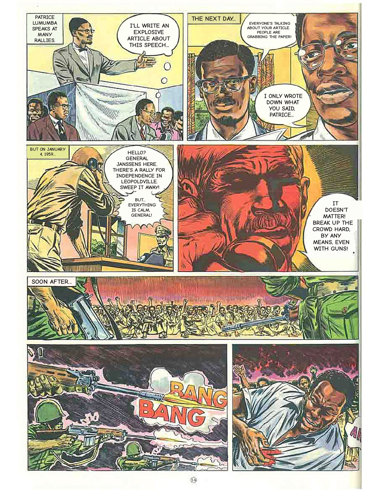

You're the fact-checker. For each part: read the page on the left → get the check right → then a second check or 1–2 sentences. Done = 4 green parts, then turn in at the bottom.
Content note: This comic was made in 1977 to praise Mobutu, the Congo's dictator. It is one-sided on purpose. It was in French; the speech bubbles have been put into English for this class. Page 1 shows soldiers shooting at a crowd.
Word help (tap to open)
- Colony = a land ruled by another country far away
- Independence = when a country rules itself
- Prime minister = the leader who runs the government day to day
- Secede = when one part of a country breaks away
- Mercenary = a soldier paid to fight for someone else's country
- Coup (say "coo") = when the army takes over the government

Click the page to make it bigger.
Turn in your work
Your work saves on this device, so you can come back later. Your teacher sees it after you turn it in.
Comic: Histoire du Zaïre: Il était une fois… Mobutu (1977), Afrique Biblio Club, Paris. A pro-government comic made for readers in Zaire (today the Democratic Republic of the Congo). Scan: Internet Archive. Reader pages are pages 14, 18, 25, and 26. The French speech bubbles were translated into English for this class; the art is unchanged. Shown as a historical source for classroom study.